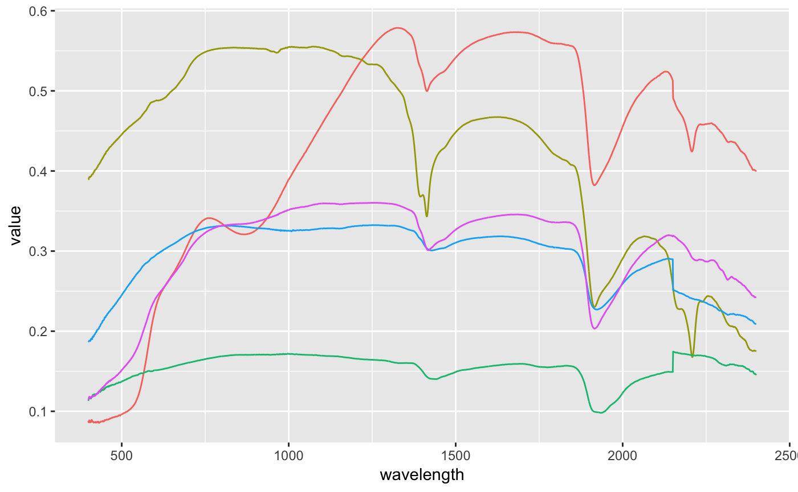
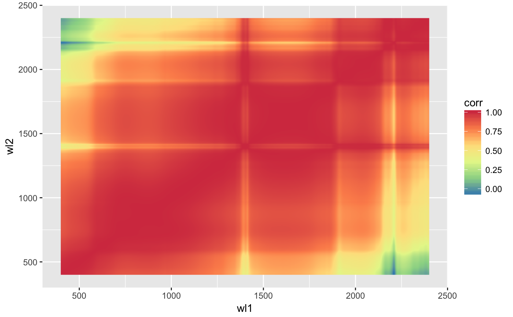
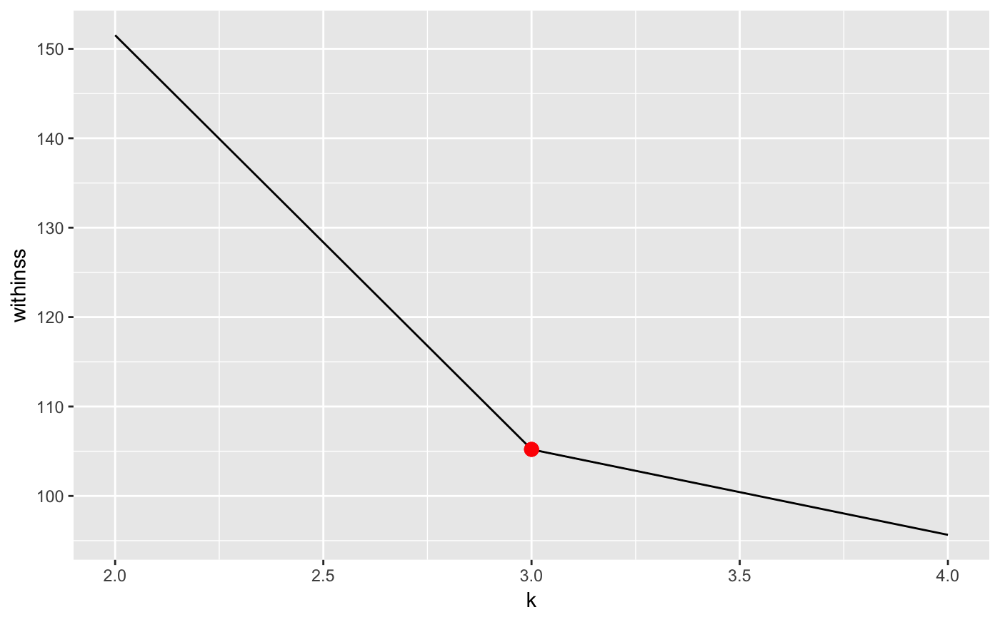
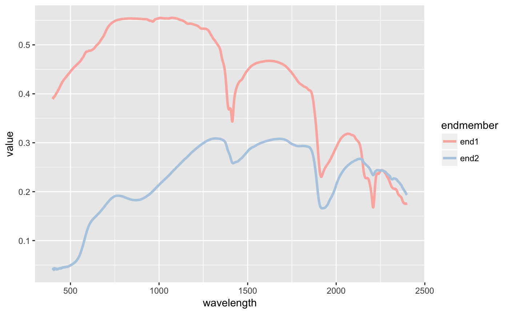
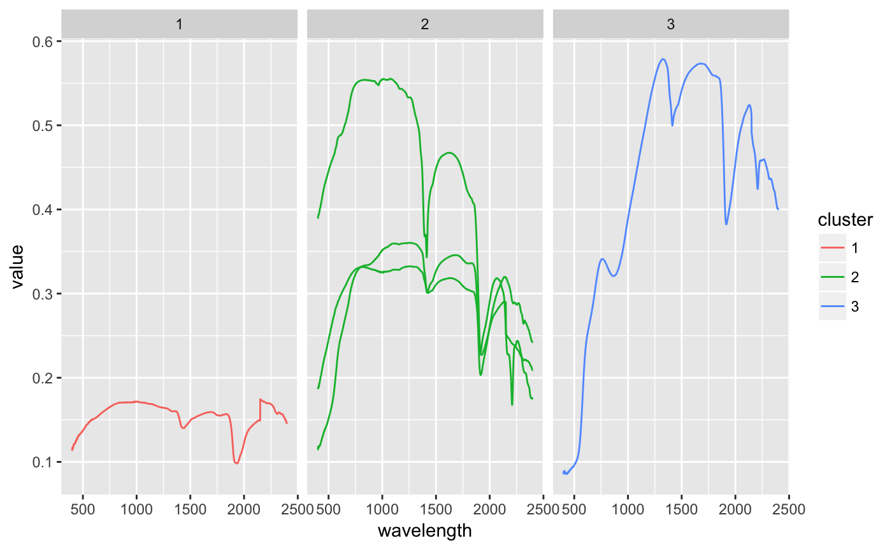
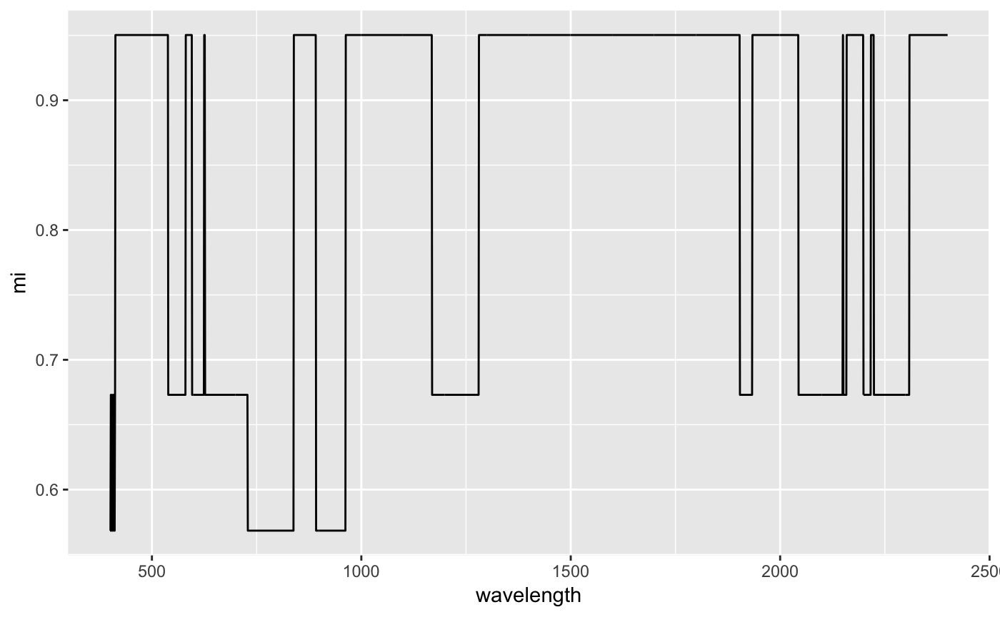
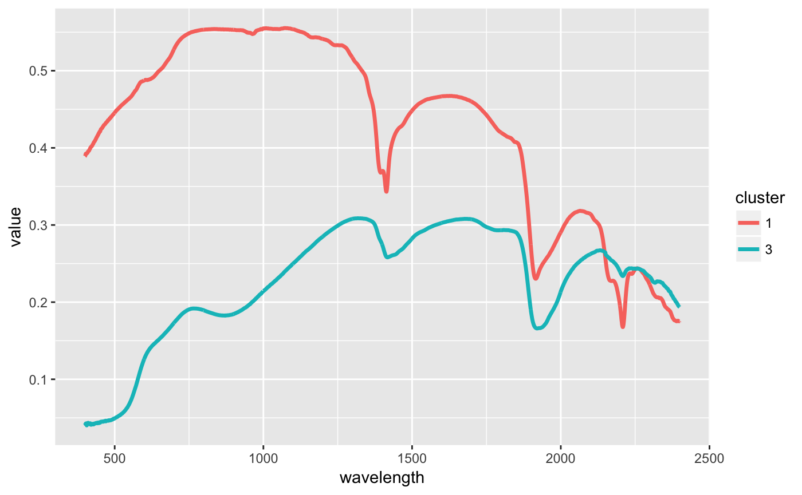
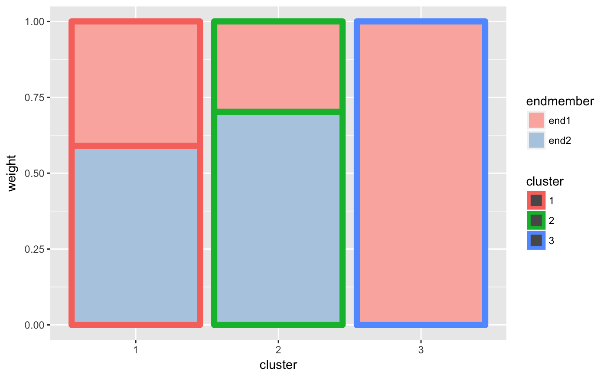
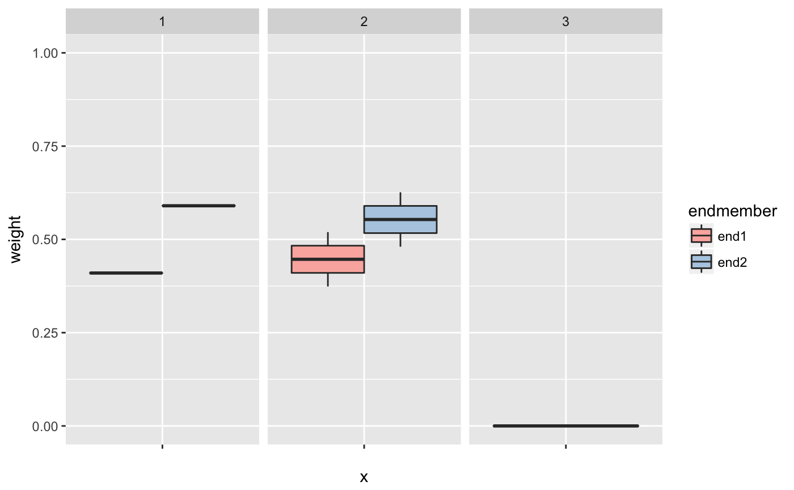
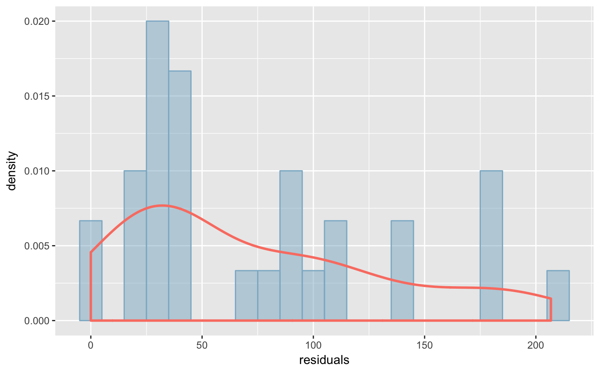

The package includes a small set of signatures called signatures. Load the data
# Loading data
data(signatures)Let’s see the information of the signatures
print(signatures)## [1] "Spectral signatures of 5 files"summary(signatures)## [1] "Spectral signatures of 5 files\n\n"
##
## Ranges
## Length: 2151
## Min: 350
## Max: 2500
##
## Files
## [1] "almagre.asd.txt" "blanco.asd.txt" "naranja.asd.txt" "negro.asd.txt"
## [5] "soporte.asd.txt"is.spectral(signatures)## [1] TRUEWe can filter signatures in three different ways: 1. We have used three different sensors for different wavelengths. The change of sensor introduces some error, which can be corrected by smooth_leaps function: just tell the first wavelength of each sensor (but the first one). 2. The lowest wavelengths might include more noise than the rest of the measures. We can filter out the lower wavelengths by using remove_head. 3. The highest wavelengths might include more noise than the rest of the measures. We can filter out the higher wavelengths by using remove_tail.
signatures <- smooth_leaps(signatures, leaps=c(1001, 1831))
signatures <- remove_head(signatures, head=400)
signatures <- remove_tail(signatures, tail=2400)We can see the simple plots like signatures and intracorrelation among wavelengths.
plot_signatures(signatures)
plot_intracorrelation(signatures)
If we are not sure aboud the possible number of endmembers, we can use the plot_elbow to check the K-Means intercluster error for different number of groups (k). For report purposes, we might want to select a specific value of k in the plot.
plot_elbow(signatures, k=2:4, selected=3)
Apply VCA to compute the endmembers using k=2. Then, apply K-Means clustering using a number of clusters k=3.
signatures <- unmixing_vca(signatures, k=2)
signatures <- clustering_kmeans(signatures, k=3)See information of VCA in tabular format
table_endmembers(signatures)## endmember file
## [1,] "end1" "almagre.asd.txt"
## [2,] "end2" "blanco.asd.txt"table_residuals_summary(signatures)## Min. 1st Qu. Median Mean 3rd Qu. Max.
## [1,] 1.834921e-13 3.310408e-13 252.1471 213.7784 268.9472 547.7976table_weights(signatures)## file end1 end2 residual
## almagre.asd.txt almagre.asd.txt 1.000000e+00 0.0000000 1.834921e-13
## blanco.asd.txt blanco.asd.txt -8.881784e-16 1.0000000 3.310408e-13
## naranja.asd.txt naranja.asd.txt 4.098623e-01 0.5901377 5.477976e+02
## negro.asd.txt negro.asd.txt 3.737964e-01 0.6262036 2.689472e+02
## soporte.asd.txt soporte.asd.txt 5.195610e-01 0.4804390 2.521471e+02See information of VCA and K-Means as plots
plot_endmembers(signatures)
plot_clusters(signatures)
plot_mutualinfo(signatures)
plot_endmember_cluster(signatures)
plot_endmember_density_bar(signatures)
plot_endmember_density_box(signatures)## Warning: Removed 3 rows containing non-finite values (stat_boxplot).
plot_residuals(signatures)